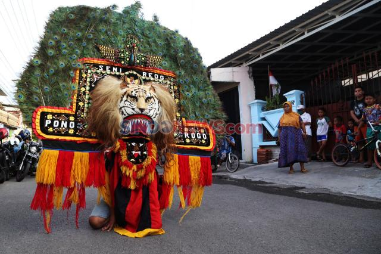
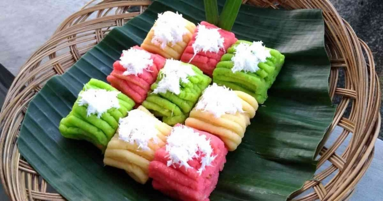

Potensi Wisata

Kereta Sawah
Wahana rekreasi dan edukasi pertama di Ponorogo dengan pemandangan Gunung Wilis.

Budaya & Religi
Seni Reog Ponorogo, sanggar tari, kerajinan tangan, dan wisata religi Makam Mbah Ageng.

Spot Selfie
Pemandangan Gunung Wilis & Lawu, 3 Tugu Pencak Silat, dan panorama alam.

Kuliner Desa
Jamu khas, jajanan tradisional, UMKM lokal, dan saung kuliner.